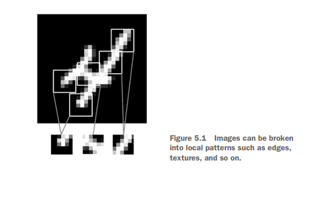
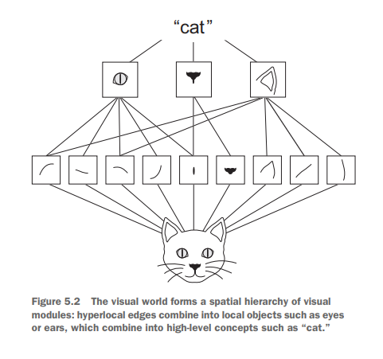
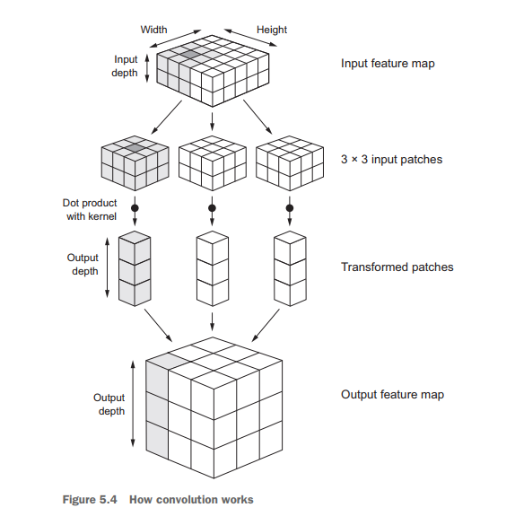

The fundamental difference between a densely connected layer and a convolution layer is this: Dense layers learn global patterns in their input feature space (for example, for a MNIST digit, patterns involving all pixels), whereas convolution layers learn local patterns

Properties
This key characteristic gives convnets two interesting properties:
The patterns they learn are translation invariant : After learning a certain pattern in the lower-right corner of a picture, a convnet can recognize it anywhere . A densely connected network would have to learn the pattern anew if it appeared at a new location . This makes convnets data efficient when processing images
They can learn spatial hierarchies of patterns : A first convolution layer will learn small local patterns such as edges, a second convolution layer will learn larger patterns made of the features of the first layers, and so on. This allows convnets to efficiently learn increasingly complex and abstract visual concepts (because the visual world is fundamentally spatially hierarchical)

Feature Maps
Convolutions operate over 3D tensors, called feature maps, with two spatial axes (height and width) as well as a depth axis (also called the channels axis). For an RGB image, the dimension of the depth axis is 3, because the image has three color channels: red, green, and blue. For a black-and-white picture, like the MNIST digits,the depth is 1 (levels of gray).
The convolution operation extracts patches from its input feature map and applies the same transformation to all of these patches, producing an output feature map. This output feature map is still a 3D tensor: it has a width and a height. Its depth can be arbitrary, because the output depth is a parameter of the layer , and the different channels in that depth axis no longer stand for specific colors as in RGB input; rather, they stand for filters . The 2D tensor output[:, :, n] is the 2D spatial map of the response of this filter over the input
Filters
Filters encode specific aspects of the input data: at a high level, a single filter could encode the concept “presence of a face in the input,” for instance.
Parameters
Convolutions are defined by two key parameters:
Size of the patches extracted from the inputs —These are typically 3 × 3 or 5 × 5
Depth of the output feature map—The number of filters computed by the convolution
In Keras Conv2D layers, these parameters are the first arguments passed to the layer: Conv2D(output_depth, (window_height, window_width))
Convolution Mechanism
A convolution works by sliding these windows of size 3 × 3 or 5 × 5 over the 3D input feature map, stopping at every possible location, and extracting the 3D patch of surrounding features (shape (window_height, window_width, input_depth)). Each such 3D patch is then transformed (via a tensor product with the same learned weight matrix, called the convolution kernel) into a 1D vector of shape (output_depth,).
All of these vectors are then spatially reassembled into a 3D output map of shape (height,width, output_depth). Every spatial location in the output feature map corresponds to the same location in the input feature map

Note that the output width and height may differ from the input width and height . They may differ for two reasons:
Border effects
If you want to get an output feature map with the same spatial dimensions as the input, you can use padding . Padding consists of adding an appropriate number of rows and columns on each side of the input feature map so as to make it possible to fit center convolution windows around every input tile
In Conv2D layers, padding is configurable via the padding argument, which takes two values: valid, which means no padding (only valid window locations will be used); and same, which means “**pad in such a way as to have an output with the same width and height as the input.**” The padding argument defaults to valid
Stride
The description of convolution so far has assumed that the center tiles of the convolution windows are all contiguous. But the distance between two successive windows is a parameter of the convolution, called its stride, which defaults to 1.
Using stride 2 means the width and height of the feature map are downsampled by a factor of 2 (in addition to any changes induced by border effects). Strided convolutions are rarely used in practice, although they can come in handy for some types of models; it’s good to be familiar with the concept
To downsample feature maps, instead of strides, we tend to use the max-pooling operation
Max Pooling
The role of max pooling: to aggressively downsample feature maps, much like strided convolutions
Max pooling consists of extracting windows from the input feature maps and outputting the max value of each channel. It’s conceptually similar to convolution, except that instead of transforming local patches via a learned linear transformation (the convolution kernel), they’re transformed via a hardcoded max tensor operation
A big difference from convolution is that max pooling is usually done with 2 × 2 windows and stride 2, in order to downsample the feature maps by a factor of 2. On the other hand, convolution is typically done with 3 × 3 windows and no stride (stride 1)
The reason to use downsampling is to reduce the number of feature-map coefficients to process, as well as to induce spatial-filter hierarchies by making successive convolution layers look at increasingly large windows (in terms of the fraction of the original input they cover)
Training CNN from scratch on a small dataset
Trainning on large dataset is easy , but getting similar good result from small dataset is the real challange because in real life it is not easy to get a large dataset
Because convnets learn local, translation-invariant features, they’re highly data efficient on perceptual problems. Training a convnet from scratch on a very small image dataset will still yield reasonable results despite a relative lack of data, without the need for any custom feature engineering.
The train folder contains 25,000 images of dogs and cats. Each image in this folder has the label as part of the filename. The test folder contains 12,500 images, named according to a numeric id. For each image in the test set, you should predict a probability that the image is a dog (1 = dog, 0 = cat).
1 2 3 4 5 6 7 8 9 10 11 12 13 14 15 16 17
# This Python 3 environment comes with many helpful analytics libraries installed # It is defined by the kaggle/python Docker image: https://github.com/kaggle/docker-python # For example, here's several helpful packages to load
import numpy as np # linear algebra import pandas as pd # data processing, CSV file I/O (e.g. pd.read_csv)
# Input data files are available in the read-only "../input/" directory # For example, running this (by clicking run or pressing Shift+Enter) will list all files under the input directory
import os for dirname, _, filenames in os.walk('/kaggle/input'): for filename in filenames: print(os.path.join(dirname, filename))
# You can write up to 20GB to the current directory (/kaggle/working/) that gets preserved as output when you create a version using "Save & Run All" # You can also write temporary files to /kaggle/temp/, but they won't be saved outside of the current session
import zipfile with zipfile.ZipFile("../input/dogs-vs-cats-redux-kernels-edition/"+"train"+".zip","r") as z: z.extractall(".")
1 2 3
import zipfile with zipfile.ZipFile("../input/dogs-vs-cats-redux-kernels-edition/"+"test"+".zip","r") as z: z.extractall(".")
Importing Dependencies
1 2 3 4 5 6 7 8
import os, cv2, re, random import numpy as np import pandas as pd from keras.preprocessing.image import ImageDataGenerator from keras.preprocessing.image import img_to_array, load_img from keras import layers, models, optimizers from keras import backend as K from sklearn.model_selection import train_test_split
Preparing Data
Image Size - (150 x 150) (somewhat arbitrary)
1 2 3 4 5 6
img_width = 150 img_height = 150 TRAIN_DIR = '/kaggle/working/train/' TEST_DIR = '/kaggle/working/test/' train_images_dogs_cats = [TRAIN_DIR+i for i in os.listdir(TRAIN_DIR)] # use this for full dataset test_images_dogs_cats = [TEST_DIR+i for i in os.listdir(TEST_DIR)]
defprepare_data(list_of_images): """ Returns two arrays: x is an array of resized images y is an array of labels """ x = [] # images as arrays y = [] # labels for image in list_of_images: x.append(cv2.resize(cv2.imread(image), (img_width,img_height), interpolation=cv2.INTER_CUBIC)) for i in list_of_images: if'dog'in i: y.append(1) elif'cat'in i: y.append(0) #else: #print('neither cat nor dog name present in images') return x, y
1 2
X, Y = prepare_data(train_images_dogs_cats) print(K.image_data_format())
channels_last
Train Validation Split
1 2
# First split the data in two sets, 80% for training, 20% for Val/Test) X_train, X_val, Y_train, Y_val = train_test_split(X,Y, test_size=0.2, random_state=1)
As you already know by now, data should be formatted into appropriately pre-processed floating point tensors before being fed into our network. Currently, our data sits on a drive as JPEG files, so the steps for getting it into our network are roughly:
Read the picture files.
Decode the JPEG content to RBG grids of pixels.
Convert these into floating point tensors.
Rescale the pixel values (between 0 and 255) to the [0, 1] interval (as you know, neural networks prefer to deal with small input values).
It may seem a bit daunting, but thankfully Keras has utilities to take care of these steps automatically. Keras has a module with image processing helper tools, located at keras.preprocessing.image. In particular, it contains the class ImageDataGenerator which allows to quickly set up Python generators that can automatically turn image files on disk into batches of pre-processed tensors. This is what we will use here
Let’s fit our model to the data using the generator. We do it using the fit_generator method, the equivalent of fit for data generators like ours.
It expects as first argument a Python generator that will yield batches of inputs and targets indefinitely, like ours does. Because the data is being generated endlessly, the generator needs to know example how many samples to draw from the generator before declaring an epoch over. This is the role of the steps_per_epoch argument: after having drawn steps_per_epoch batches from the generator, i.e. after having run for steps_per_epoch gradient descent steps, the fitting process will go to the next epoch
So , steps_per_epoch = np.ceil(number_of_samples/batch_size)
1 2 3 4 5 6 7
history = model.fit_generator( train_generator, steps_per_epoch=np.ceil(nb_train_samples/batch_size), epochs=30, validation_data=validation_generator, validation_steps=np.ceil(nb_validation_samples/batch_size) )
These plots are characteristic of overfitting. Our training accuracy increases linearly over time, until it reaches nearly 100%, while our validation accuracy stalls at 73-75%. Our validation loss reaches its minimum after only five epochs then stalls, while the training loss keeps decreasing linearly until it reaches nearly 0
Because we only have relatively few training samples (2400), overfitting is going to be our number one concern. You already know about a number of techniques that can help mitigate overfitting, such as dropout and weight decay (L2 regularization) . We are now going to introduce a new one, specific to computer vision, and used almost universally when processing images with deep learning models: data augmentation.
Predict
1 2
print(len(test_images_dogs_cats)) X_test, Y_test = prepare_data(test_images_dogs_cats) #Y_test in this case will be []
12500
1 2 3
from keras.models import load_model model = load_model('/kaggle/input/test-save/cats_and_dogs_small_input_format_change_1.h5') model.summary()
for col in cols: solution[col] = solution[col].map(lambda x: str(x).lstrip('[').rstrip(']')).astype(float)
solution.to_csv("dogsVScats2.csv", index = False)
Data Augmentation
Overfitting is caused by having too few samples to learn from, rendering us unable to train a model able to generalize to new data. Given infinite data, our model would be exposed to every possible aspect of the data distribution at hand: we would never overfit. Data augmentation takes the approach of generating more training data from existing training samples, by “augmenting” the samples via a number of random transformations that yield believable-looking images. The goal is that at training time, our model would never see the exact same picture twice. This helps the model get exposed to more aspects of the data and generalize better.
# Note that the validation data should not be augmented! test_datagen = ImageDataGenerator(rescale=1./255)
These are just a few of the options available (for more, see the Keras documentation). Let’s quickly go over what we just wrote:
rotation_range is a value in degrees (0-180), a range within which to randomly rotate pictures.
width_shift and height_shift are ranges (as a fraction of total width or height) within which to randomly translate pictures vertically or horizontally.
shear_range is for randomly applying shearing transformations.
zoom_range is for randomly zooming inside pictures.
horizontal_flip is for randomly flipping half of the images horizontally – relevant when there are no assumptions of horizontal asymmetry (e.g. real-world pictures).
fill_mode is the strategy used for filling in newly created pixels, which can appear after a rotation or a width/height shift.